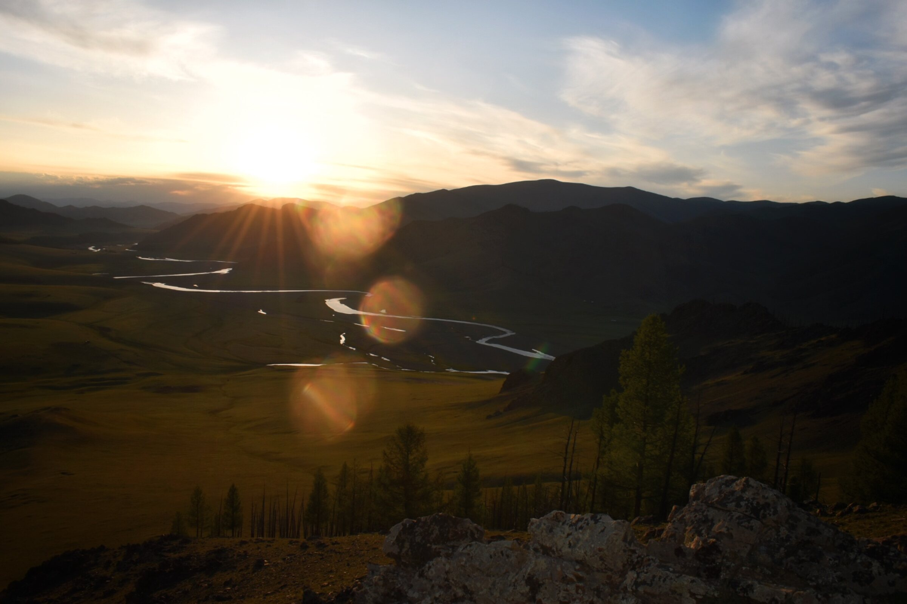

8 Lakes Tours
Orkhon Valley · Mongolia
9 days · small groups · nomadic family hosted
Ride into the
endless steppe.
A horseback expedition through Mongolia’s Orkhon Valley and Eight Lakes—guided by local horsemen and open to beginner and intermediate riders.
9 days8 nights
Max 8Guests
From $1,799Per person
See dates & book online